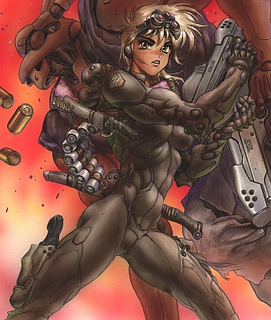
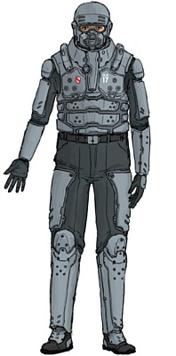

Here is a list of body protections available in the world of Cyberpunk 2020. As you will see, the value of the protections has been modified from the one given in the original rules. The proposed values make "civil" armors more reasonable : a "light" garment in all probability can't stop a 44 Magnum bullet. Thus, no doubt, the 12 mm pocket gun will no longer be the standard invariably used by your player and non-player characters.
EV : loss of Reflexes (REF) and Movement Allowance (MA) for all skills. Add all Encumberance Values and note it on the sheet for reference.
Cumulating layers : in addition to the total of EV, having more than one armor layer on the same area of the body has its limits :
Soft/rigid : react differently to some attacks (armour-piercing, explosions, flames, collisions, falls, etc). Rigid armors are generally used by military/paramilitary/government groups and is therefore much more conspicuous.
For soft armor, the protection is halved for edged weapons. They do not protect against falling or impact from a car. Rigid armor offers reduced protection (one third) against this type of damage.
In front of flames, a soft armor offers very little protection (it will tend to ignite, like classic clothes). A well closed and rigid armor like a Metal Gear guarantees a few rounds of protection before warming up.
| Name | | Type | Cost | Description | |||||||||
| MetalGear III modular combat armor | |||||||||||||
| MetalGear arms | 20 | 20 | 0.5 | Rigid | 200 | ||||||||
| MetalGear boots | 20 | 18 | 0 | Rigid | 200 | ||||||||
| MetalGear breastplate | 22 | 1 | Rigid | 300 | |||||||||
| MetalGear full helmet | 22 | 0 | Rigid | 250 | -4 Awareness/Notice | ||||||||
| MetalGear gloves | 18 | 0 | Rigid | 150 | -2 WA | ||||||||
| MetalGear shoulder pads | 20 | 0.5 | Rigid | 150 | |||||||||
| MetalGear thighs | 20 | 1 | Rigid | 200 | |||||||||
| Gibson form-fitting body armor | |||||||||||||
| Level 1 body armor | 10 | 8 | 8 | 8 | 8 | 8 | 8 | 8 | 0 | Soft | 700 | ||
| Level 1 vest | 10 | 0 | Soft | 200 | |||||||||
| Level 2 body armor | 14 | 10 | 10 | 10 | 10 | 10 | 10 | 10 | 1 | Soft | 1000 | ||
| Level 2 vest | 14 | 1 | Soft | 400 | |||||||||
| Level 3 body armor | 18 | 12 | 12 | 12 | 12 | 12 | 12 | 12 | 2 | Soft | 1500 | ||
| Level 3 vest | 16 | 1 | Soft | 700 | |||||||||
| Kelmar security armor | |||||||||||||
| Class 14 security armor | 18 | 18 | 12 | 12 | 18 | 18 | 1 | Rigid | 1000 | ||||
| Class 17 security armor | 22 | 22 | 16 | 16 | 20 | 20 | 2 | Rigid | 1350 | ||||
| Class 8 security armor | 15 | 15 | 10 | 10 | 15 | 15 | 0 | Rigid | 800 | ||||
| Kelmar security helmet with visor | 22 | 0 | Rigid | 350 | -3 Awareness/Notice | ||||||||
| BAMA police armor | |||||||||||||
| Assault armor | 24 | 22 | 22 | 22 | 14 | 22 | 22 | 14 | 3 | Rigid | 2500 | -2 WA | |
| Epoxide faceplate | 18 | 0 | Rigid | 100 | -1 Awareness/Notice, face only | ||||||||
| Field armor with plate inserts | 18 | 18 | 18 | 14 | 12 | 18 | 14 | 12 | 2 | Rigid | 1200 | ||
| Standard field armor | 14 | 14 | 14 | 12 | 12 | 14 | 12 | 12 | 1 | Rigid | 1000 | ||
| Standard helmet | 18 | 0 | Rigid | 150 | -2 Awareness/Notice | ||||||||
| Militech M-78 series armor (all grades are AP-proof) | |||||||||||||
| M-78 jacket | 12 | 10 | 10 | 10 | 1 | Soft | 1200 | ||||||
| M-78 t-shirt | 6 | 0 | Soft | 730 | |||||||||
| M-78 vest | 18 | 12 | 2 | Rigid | 1600 | ||||||||
| Plate insert body armor | |||||||||||||
| Plate insert jacket | 10 | 8 | 8 | 8 | 0 | Soft | 250 | ||||||
| Plate insert jacket with trauma plates | 16 | 8 | 8 | 8 | 1 | Rigid | 300 | ||||||
| Plate insert long coat | 10 | 8 | 8 | 8 | 8 | 0 | Soft | 350 | |||||
| Plate insert long coat with trauma plates | 16 | 10 | 10 | 10 | 10 | 2 | Rigid | 450 | |||||
| Plate insert pants | 10 | 8 | 1 | Soft | 140 | ||||||||
| Plate insert pants with trauma plates | 14 | 12 | 2 | Rigid | 420 | ||||||||
| Plate insert vest | 10 | 0 | Rigid | 140 | |||||||||
| Plate insert vest with trauma plates | 17 | 1 | Rigid | 450 | |||||||||
| SecureTech armored clothing (Urban Flash, above average quality - can be BusinessWear for 50% more) | |||||||||||||
| SecureTech jacket | 12 | 10 | 10 | 10 | 0 | Soft | 350 | ||||||
| SecureTech long coat | 14 | 12 | 12 | 12 | 12 | 0 | Soft | 650 | |||||
| SecureTech trench coat | 14 | 12 | 12 | 12 | 12 | 12 | 0 | Soft | 1300 | ||||
| SecureTech ultra-vest | 12 | 0 | Soft | 300 | |||||||||
| SecureTech vest | 8 | 0 | Soft | 250 | |||||||||
| External add-ons | |||||||||||||
| Ballistech Exo-Plasts | 0 | Soft | 150 | Becomes SP : 10, EV : 1 after first hit | |||||||||
| E-Z Glide KneePads | 6 | 0 | Rigid | 100 | +2 Athletics for slides | ||||||||
| Forearm guards | 8 | 0 | Rigid | 250 | +1 Parry | ||||||||
| PolyChromate shields arm | 6 | 0 | Rigid | 250 | +1 Parry | ||||||||
| PolyChromate shields leg | 6 | 6 | 0.5 | Rigid | 250 | +1 Parry | |||||||
| Quake Technologies | |||||||||||||
| Quake Tech armor jack | 16 | 14 | 1 | Rigid | 300 | ||||||||
| Quake Tech combat suit | 16 | 14 | 12 | 12 | 12 | 12 | 2 | Rigid | 500 | ||||
| Quake Tech full body armor | 22 | 25 | 22 | 20 | 20 | 18 | 20 | 20 | 18 | 3 | Rigid | 1700 | -4 Awareness/Notice |
| Smart armors (require interface plugs & machine or ACPA linkup) | |||||||||||||
| MetalGear IV full suit (without helmet) | 25 | 22 | 22 | 22 | 20 | 22 | 22 | 20 | 2 | Rigid | 3500 | -1 WA | |
| MetalGear V full suit (without helmet) | 25 | 22 | 22 | 22 | 20 | 22 | 22 | 20 | 1 | Rigid | 8200 | -1 WA | |
| Smart composite suit | 22 | 10 | 10 | 10 | 10 | 10 | 1 | Rigid | 4800 | ||||
| Smart heavy armor jacket | 18 | 16 | 16 | 16 | 1 | Rigid | 2600 | ||||||
| Smart medium armor jacket | 16 | 14 | 14 | 14 | 0 | Soft | 1800 | ||||||
| Stealth armors | |||||||||||||
| Arasaka BlackJack smart stealth armor | 16 | 16 | 16 | 16 | 16 | 14 | 16 | 16 | 14 | 1 | Rigid | 29000 | Requires interface plugs, +3 Audio Stealth, visual camouflage, 4 hour life support, radar invisibility, low light, anti-dazzle, targeting scope, times square, -4 Awareness/Notice, -1/10m distance |
| Arasaka BlackJack stealth armor | 16 | 16 | 14 | 14 | 14 | 12 | 14 | 14 | 12 | 2 | Rigid | 12000 | +3 Audio Stealth, visual camouflage, 4 hour life support, radar invisibility, low light, anti-dazzle, targeting scope, times square, -4 Awareness/Notice, -1/10m distance |
| Gibson / HydroSubsidium deep sneak suit | 10 | 10 | 10 | 10 | 10 | 10 | 10 | 10 | 10 | 2 | Rigid | 3500 | 120 minute air supply |
| Gibson / Mitsubishi light maneuver sneak suit | 8 | 8 | 8 | 8 | 8 | 8 | 8 | 8 | 8 | 2 | Rigid | 2500 | 40 minute air supply |
| Gibson BattleGear sneak suit | 10 | 10 | 10 | 10 | 10 | 10 | 10 | 10 | 10 | 0 | Soft | 560 | Visual camouflage : -4 Awareness/Notice in low light, -1/10m distance. Melts in the sun |
| Gibson BattleGear sneak suit helmet | 18 | 0 | Rigid | 185 | -3 Awareness/Notice | ||||||||
| Gibson BattleGear sneak suit vest | 16 | 14 | 14 | 14 | 1 | Rigid | 375 | ||||||
| Militech M73 Mirage Gear | 12 | 12 | 12 | 12 | 12 | 12 | 12 | 12 | 12 | 1 | Soft | 1050 | Visual camouflage : -2 Awareness/Notice, -1 if moving, -1/10m distance |
| Militech M73 Mirage Gear flak vest | 18 | 16 | 16 | 16 | 1 | Rigid | 525 | ||||||
| Militech M73 Mirage Gear helmet | 22 | 0 | Rigid | 140 | -3 Awareness/Notice | ||||||||
| Militech M96 GhostSuit chameleon clothing | 10 | 10 | 10 | 10 | 10 | 10 | 10 | 10 | 1 | Soft | 5300 | Visual camouflage : -4 Awareness/Notice, -2 if moving, -1/10m distance | |
| Militech M96 GhostSuit chameleon helmet | 16 | 0 | Rigid | 600 | -3 Aware | ||||||||
| Thermoptic camouflage | 1 | Soft | 45000 | Visual camouflage : -10 Awareness/Notice, -1/5m distance | |||||||||
| Generic Epoxide & Kevlar armors | |||||||||||||
| Anti-riot armor | 20 | 22 | 15 | 15 | 15 | 15 | 15 | 3 | Rigid | 1850 | |||
| Anti-riot police shield | 15 | 15 | 1 | Rigid | 150 | ||||||||
| Armored faux fur toque | 5 | 0 | Rigid | 75 | |||||||||
| Ballistech life jacket | 7 | 7 | 1 | Soft | 250 | ||||||||
| Ballistech Skintight III | 0 | Soft | 3500 | Absorbs 1/3 of damage (max 15) | |||||||||
| C/Ballistic mesh | 15 | 15 | 15 | 15 | 15 | 15 | 15 | 15 | 15 | 1 | Soft | 2700 | |
| Campaign suit | 7 | 7 | 7 | 7 | 7 | 7 | 7 | 7 | 0 | Soft | 1300 | ||
| Combat Zone armor | 12 | 11 | 9 | 9 | 9 | 11 | 9 | 2 | Rigid | 100 | |||
| Composite armor jacket | 15 | 11 | 11 | 11 | 2 | Rigid | 750 | ||||||
| Composite flack jacket | 18 | 15 | 15 | 15 | 3 | Rigid | 1600 | ||||||
| Concealable body armor | 10 | 8 | 8 | 0 | Rigid | 200 | |||||||
| Door gunner's vest | 22 | 20 | 3 | Rigid | 250 | ||||||||
| Environmental suit | 10 | 10 | 10 | 10 | 10 | 10 | 10 | 10 | 10 | 3 | Rigid | 725 | |
| Epoxide faceplate | 18 | 0 | Rigid | 100 | -1 Awareness/Notice, face only | ||||||||
| Epoxide helmet | 18 | 0 | Rigid | 150 | -2 Awareness/Notice | ||||||||
| Epoxide pants | 9 | 9 | 1 | Rigid | 300 | ||||||||
| Extreme cold coat | 7 | 7 | 7 | 7 | 7 | 1 | Soft | 250 | |||||
| Floating naval armor | 10 | 10 | 10 | 10 | 10 | 10 | 10 | 3 | Rigid | 550 | |||
| Guercio work helmet | 18 | 0 | Rigid | 600 | -1 Awareness/Notice | ||||||||
| Headgear | 10 | 0 | Rigid | 4100 | |||||||||
| Heavy armor jacket | 12 | 9 | 9 | 9 | 2 | Soft | 250 | ||||||
| Heavy Kevlar vest | 18 | 0 | Rigid | 175 | |||||||||
| Kevlar helmet insert | +4 | 0 | Rigid | 50 | |||||||||
| Kevlar hood | 5 | 0 | Soft | 75 | |||||||||
| Kevlar shirt | 5 | 5 | 4 | 4 | 0 | Soft | 100 | ||||||
| Kevlar vest | 10 | 0 | Soft | 100 | |||||||||
| Lano coverall | 12 | 11 | 11 | 11 | 11 | 11 | 2 | Soft | 1600 | ||||
| Light armor jacket | 8 | 7 | 7 | 7 | 0 | Soft | 150 | ||||||
| Light armor pants | 7 | 7 | 0 | Soft | 100 | ||||||||
| Medical combat armor | 18 | 18 | 15 | 15 | 15 | 15 | 15 | 3 | Rigid | 3400 | |||
| Medieval armor | 10 | 10 | 10 | 10 | 10 | 10 | 10 | 10 | 10 | 6 | Rigid | 3600 | -5 Awareness/Notice |
| Medium armor jacket | 10 | 8 | 8 | 8 | 1 | Soft | 200 | ||||||
| Mesh armored jacket | 11 | 9 | 9 | 9 | 1 | Soft | 350 | ||||||
| Motorcycle Helmet | 10 | 0 | Rigid | 30 | -2 Awareness/Notice | ||||||||
| Multi-purpose police shield | 10 | 0 | Rigid | 80 | |||||||||
| Netrunner utility suit | 8 | 8 | 8 | 8 | 8 | 8 | 8 | 8 | 0 | Soft | 6300 | ||
| Nylon helmet with visor | 18 | 0 | Rigid | 100 | -2 Awareness/Notice | ||||||||
| Patrol armor | 15 | 12 | 10 | 10 | 12 | 10 | 2 | Rigid | 900 | ||||
| Pinamonte boots | 12 | 12 | 0 | Rigid | 500 | ||||||||
| Police helmet (paradoc) | 16 | 0 | Rigid | 180 | -1 Awareness/Notice | ||||||||
| Police helmet (patrol) | 17 | 0 | Rigid | 230 | -1 Awareness/Notice | ||||||||
| Police helmet (traffic) | 14 | 0 | Rigid | 170 | -1 Awareness/Notice | ||||||||
| Reactive armor | 20 | 20 | 1 | Rigid | 4990 | ||||||||
| Reinforced raincoat | 7 | 7 | 7 | 7 | 7 | 7 | 0 | Soft | 250 | ||||
| Reinforced stockings | 4 | 4 | 0 | Soft | 110 | ||||||||
| Spider web jacket | 11 | 11 | 11 | 11 | 0 | Soft | 5800 | Rare | |||||
| Spider web pants | 11 | 11 | 0 | Soft | 5200 | Rare | |||||||
| Steel helmet | 14 | 0 | Rigid | 75 | -1 Awareness/Notice | ||||||||
| Thick leather ensemble | 3 | 3 | 3 | 3 | 3 | 3 | 0 | Soft | 50 | ||||
| US Army assault armor | 22 | 22 | 20 | 20 | 20 | 22 | 20 | 2 | Rigid | 5900 | |||
These are normally the least visible, most benign armors.
Example : I want an armored duster long coat. In (a) it is a Heavy type coat, base price 55. I take it in leather (+50%) : about 80. Then I look in (b), Heavy column. I take the maximum soft type armor (less visible) : SP 16 for a multiplier of x4.5, or 360 eb. Finally, I look in (c) and I want the duster in Edgerunner style (300%) and of good quality (150%) or a price increase of 450% (x4.5). The final price hurts my buttocks : 360 x 4.5 = 1620 eb. But I've got style, pockets everywhere for ammo and gadgets, and SP 16 on almost the whole body.
You're going to tell me : "yeah, but a full MetalGear armor costs a little less, with higher SP".
Yes but with a MetalGear you also have an EV of 2 (so -2 in REF and MA at all time) and then, when I approach Arasaka HQ with my trench coat, they probably won't fire first with their anti-borg weapons.
| Light | Medium | Heavy | |||
| Balaclava Blouse Dress Gloves Hat Jumpsuit Long gloves Long skirt Miniskirt Scarf Shades Shirt Short cape Shorts Ski mask Stockings Sweater T-Shirt Tank top Tie Tunic Vest | 10 15 50 20 5-25 50 30 55 30 15 5-50 20 75 10 15 20 20 10 10 20 25 25 |
Cloak Heavy skirt Jacket Kneeboots Leather tunic Long cape Long jacket Motorcycle boots Motorcycle gloves Pants / Jeans Shoes Soft boots Trench coat | 50 55 35 40 75 90 40 40 35 20 15 25 125 |
Chaps Greaves Hard boots Heavy long coat Leather coat Leather jacket Motorcycle jacket Motorcycle pants | 60 80 50 55 110 70 100 65 |
| Note : |
|
| Light | Medium | Heavy | ||||
| SP | Cost | EV | Cost | EV | Cost | EV |
| 4 6 8 10 12 14 16 18 20 |
x3 x3.5 x4 x4.5 x5 x6 x7 |
-1 -2 |
x2.5 x3 x3.5 x4 x4.5 x5 x5.5 x6 x7 |
-1 -2 -3 |
x1.5 x2 x2.5 x3 x3.5 x4 x4.5 x5 x5.5 |
-1 -2 |
| Style | ||
| Generic Chic | Plain clothes, cheap in appearance, if armoured then the armour is clearly visible and is often marked with "ArmorPlast" or similar logos. | 100% |
| LeisureWear | As found at Zellers and K-Marts world-wide. Includes sportswear, gymnastic clothes and general middle class utilitarian clothes. | 200% |
| Urban Flash | Whatever is cool this month. Often black, sometimes with glow panels and extra pockets or zippers or whatever. | 200% |
| BusinessWear | Zaibatsu Chic. Business suits from the tragic 100 eb JCPenny suit to the best Armani and Takana Exec. | 300% |
| EdgeRunner | Slightly more utilitarian version of urban flash, with some extra padding, armour, and pockets to hide stuff. | 300% |
| High Fashion | From the runways of Paris, New York, Milan and Tokyo, straight to your wardrobe ! | 400% |
| Quality | ||
| Sub-Average Quality | Cheaply made of inferior fabrics. Tend to tear easily, best used for clothes that you will throw away instead of washing. | 50% |
| Average Quality | Cheaply made, but not incredibly so. Not up to major abuse, and not styling or distinctive yet. | 100% |
| Good Quality | What we expect from clothes. Can survive the laundromat repeatedly, and almost looks good too ! | 150% |
| Very Good Quality | Quality materials and workmanship. Available from higher-class outlets and chains. Gives +1 Wardrobe & Style. | 200% |
| Designer Quality | Some of the best, from the brand name designers. Often the best of a line like Gibson Battlegear. Gives +2 Wardrobe & Style. | 400% |
| SuperChic | Designed just for you or bought in the most outrageous boutiques. Gives +3 Wardrobe & Style. | 700% |
| Cosmetic options | ||
| PolyLog | Holds up to 4 different colour schemes. Can malfunction under combat conditions. | 300% |
| PolyChromic | Constantly Shifting version of Polylog clothing, with the same chances of malfunction in adverse conditions. | 500% |
| Usefull options | ||
| Fire Proof | Gives the clothing SP 20 vs flames. | 250% |
| AP Proof | Memory plastics under an electrical current make the armour immune to AP effects. | 300% |
| Signal Retardant | 10 SP and +4 to stun saves vs seizure, static, volt and EMP weapons. | 200% |
| Acid/Alkali Resistant | Rubberized coating provides 4 SP vs acids and bases. | 150% |
| Acid/Alkali Resistant II | Rubberized coating provides 6 SP vs acids and bases. | 300% |
| Arasaka Egret Psych Suit | |
 | |
| EV : 0 Type : Soft | Cost : 3450 eb |
|
This suit contains an array of highly specialized speakers, and can be set to generate an incredible amount of white noise, cancelling out any sound short of a gunshot in a 2 meter radius, audio enhancers cannot overcome this, however seismic detectors will notice the vibrations caused by the sound up to 50 meters away. The suit can be switched to anti-resistance mode as the speakers switch frequencies and the suit acts like a wearable version of the Arasaka Nauseator (see Chrome 2 page 43) but with the field generated in a bubble around the user. The suit can also play music at incredible volume, and it is in fact a favorite tactic to silence an area, wait for a target to boost his auditory input because he can't hear anything, then blast high frequency sound or music at the highest decibels to blow out their cyberaudio. The suit comes with a specially constructed enclosed helmet, that protects the user from the suits effects.
| |
| Arasaka Gasium K-1 Battlesuit | |
 | |
| EV : +1 Type : Rigid | Cost : 5200 eb |
|
An armored body suit usually custom compartmentalized for the wearer's specific needs (holsters for specific weapons, pockets, etc). Despite its bulk this suit is incredibly light and has low encumbrance penalty.
| |
| Arasaka Gasium K-2 Battlesuit | |
 | |
| EV : +1 Type : Rigid | Cost : 5900 eb |
|
An armored body suit usually custom compartmentalized for the wearer's specific needs (holsters for specific weapons, pockets, etc). Despite its bulk this suit is incredibly light and has low encumbrance penalty.
| |
| Arasaka Gasium K-3 Battlesuit | |
 | |
| EV : +1 Type : Rigid | Cost : 5500 eb |
|
An armored body suit usually custom compartmentalized for the wearer's specific needs (holsters for specific weapons, pockets, etc). Despite its bulk this suit is incredibly light and has low encumbrance penalty.
| |
| Arasaka Gasium K-4 Battlesuit | |
|  |  |
| EV : +1 Type : Rigid | Cost : 7200 eb |
|
An armored body suit usually custom compartmentalized for the wearer's specific needs (holsters for specific weapons, pockets, etc). Despite its bulk this suit is incredibly light and has low encumbrance penalty.
| |
| Arasaka Gasium K-5 Battlesuit | |
 | |
| EV : +1 Type : Rigid | Cost : 7350 eb |
|
An armored body suit usually custom compartmentalized for the wearer's specific needs (holsters for specific weapons, pockets, etc). Despite its bulk this suit is incredibly light and has low encumbrance penalty.
| |
| Arasaka Gasium K-6 Battlesuit | |
 | |
| EV : +1 Type : Rigid | Cost : 8000 eb |
|
An armored body suit usually custom compartmentalized for the wearer's specific needs (holsters for specific weapons, pockets, etc). Despite its bulk this suit is incredibly light and has low encumbrance penalty. The helmet is equipped with low light, anti-dazzle, UV and a military radio communicator.
| |
| Arasaka Ghost Suit | |
 | |
| EV : 0 Type : Rigid | Cost : 3675 eb |
|
This body suit was designed for stealth missions and is made from thermal dampening fibers that reduce the body heat signature to that of the outside temperature. While the suit moves freely and is highly flexible it becomes extremely uncomfortable after extended periods of time due to the thermal dampening properties, which do no allow body heat to escape at all. The suit is sold with a mask, to complete the effect.
| |
| Arasaka IAA-13 | |
 | |
| EV : 0 Type : Rigid | Cost : 1350 eb |
|
This light armor is one of Arasaka's most popular designs, and sells well to private security forces. The hemlet is fully equipped to install up to 4 cyberoptic options.
| |
| Arasaka K-7 Metal Gear | |
 | |
| EV : 0 Type : Rigid | Cost : 1370 eb |
|
A lighter and less expensive version of the Gasium battlesuit.
| |
| Arasaka Lynx | |
 | |
| EV : +1 Type : Rigid | Cost : 1475 eb |
|
Arasaka's second attempt at recreating the Gasium battlesuit. It doesn't offer as much protection and does hinder movement very slightly. But if you budget doesn't allow for Gasium, this is the next best thing.
| |
| Arasaka ORC | |
 |  |
| EV : +1 Type : Rigid | Cost : 22500 eb |
|
A lighter, albeit bulkier version of Metal Gear, this slightly powered personal armor has a REF bonus of +1. Used for fast assaults into high risk situations by E-SWAT, it is specially made for maneuverability and stealth. It utilizes the data film for transmitting the physical signals to the suit. Orc suits can monitor acoustic signatures, or A/S, giving them an Awareness bonus of plus +2. The system is also designed to monitor their comrades for the sound of breaking armor, giving them a better teamwork ratio in stealth operations. The helmet is equipped with auditory boost, Low Light enhancement, Image Enhancement and Tele-optics. The suit also boosts the MA of the user with a bonus of +2.
| |
| Arasaka Police Issue Body Armor | |
 | |
| EV : 0 Type : Soft | Cost : 760 eb |
|
This armor is designed by Arasaka to be all purpose, and so Uniformed officers, SWAT and C-SWAT are all issued the same vests and helmets with minor variations in color to differentiate them. In addition, there are armored coverings for the forearms, shoulders, thigh's, knee's and boots. As well as hard inserts for the vest (SP 4 and gives the vest an EV 1, 45 eb). These addition armor plates and inserts will have the same coloration as the officers issued uniform colors depending on duty.
| |
| Arasaka Police Issue Riot Armor | |
 | |
| EV : +3 Type : Rigid | Cost : 1755 eb |
|
This heavy armor consists of a heavy flack vest, reinforced arm gauntlets (SP 15), woven Kevlar pants, armored boots, a more streamlined helmet (so bottles and the like bounce off instead of smashing full force) and a gas mask/filter. This armor is very heavy and while it offers excellent protection, it severely limits mobility. Useful only for riots, although the bomb squad seems to have taken a shine to them too. These suits also feature a glowing blue bar with extends from the shoulder, this make the officers wearing the suit easier to spot in a crowd. The standard black jumpsuit is worn underneath.
| |
| Arasaka Poseidon | |
 | |
| EV : 0 Type : Soft | Cost : 6500 eb |
|
As thin as a datafilm but with a completely different purpose. This suit is very similar to the Militech M96 GhostSuit but is far superior, as the wearer becomes virtually invisible when the suit is activated. The suit is very hard to detect, but a slight blur can be seen when the wearer is in motion. As long as the wearer stays still they are virtually impossible to detect. While normally detectable by certain heat imaging optics some suits can be made which reduce IR signature (+1500 eb). No EV penalties apply and this suit is usually worn under some type of armor, which must be taken off before use. This suit offers a -6 against Awareness/Notice when standing still and -5 when moving. Available only to military.
| |
| Arasaka Reactivewear Bodysuit | |
 | |
| EV : 0 Type : Soft | Cost : 1140 eb |
|
The wrist control sends a small electric charge into the suit, causing it to change color. Primary colors and black, grey, brown and white come, but you can buy an upgrade that allows any color variations to be programmed for 300 eb.
| |
| Arasaka Shinobi Bodysuit | |
| EV : 0 Type : Soft | Cost : 1400 eb |
|
This suit lowers heat signature to that of a small animal when worn.
| |
| Arasaka Suppressor | |
 |  |
| EV : +3 Type : Rigid | Cost : 5450 eb |
|
This heavy armor offers more protection that standard Metal Gear. The helmet is equipped with low light, anti-dazzle, UV and a military radio communicator.
| |
| Arasaka WADR-5 | |
 | |
| EV : 0 Type : Soft | Cost : 975 eb |
|
This is the standard armor issued to medical members of a Trauma Team extraction crew. The suit consists of a basic jumpsuit with a segmented hard armor clamshell torso covering, a helmet with audio/visual recorder transmitter linked to the teams AV and patched through to Trauma Team medical consultants who can offer advice on diagnosis and treatment, as well as tactical situations. The helmet is also equipped with Low Light, Thermograph, Image Enhancement and Micro-optics options. The suit comes with a wrist wearable micro-computer with 2 detachable probe devices allowing the medic to be able to monitor the clients vitals and make a preliminary tox screen (+2 to diagnose illness and first aid checks). There are also numerous pouches and pockets for medical equipment, including two hardened pockets attached to the clamshell that hold trauma drugs.
| |
| Dynalar Blacklite Armor | |
| EV : +1 Type : Rigid | Cost : 2120 eb |
|
A very durable suit of Metal Gear style armor, head to toe protection that outperforms the competition.
| |
| Dynalar GR-4 | |
 | |
| EV : +1 Type : Rigid | Cost : 1400 eb |
|
The GR-4 armor vest is a soft armor vest with hard-shell plates attached directly protecting the chest, shoulders, spine and abdomen. The adjusting straps serve as an attachment point for additional equipment pouches, ammo, gear or holsters. Knee and shoulder pads affix directly to the BDU's via special clasps. For increased protection under heavy fire, a soldier may opt to wear the issued hard armor plates protecting the thighs and lower legs, as well as gauntlets protecting the forearm and elbows. Fully enclosed with an armored faceplate, the visor is equipped with Low Light, Thermograph and Tele-optics and a built in short range radio completes the helmet.
| |
| Dynalar GR-8 | |
 | |
| EV : +1 Type : Rigid | Cost : 19350 eb |
|
A very advanced and highly sought after piece of equipment, this advanced Metal Gear is easily comparable to Arasaka's ORC suit. Not quite as highly armored, but much less bulky. The GR-8 is so impressive, that Mossad has placed a large order for them. In addition to boosting strength and speed (MA +1, Strength +2), the suit's helmet is equipped with radio/laser comm, Level Damper, Thermograph, Low-Light, Image Enhancement, Times Square Marquee, Tele-Optics and Anti-Dazzle.
| |
| Dynalar Nizzi Executive Armor | |
| EV : 0 Type : Soft | Cost : 11700 eb |
|
This flexible but highly durable armored body suit was created with meticulously layered datafilm. It provides neck to toe protection in a design so thin and comfortable it can be worn under most clothes. It also interweaves state of the art advanced muscle fibers into the suit, increasing the users strength and speed (MA +1, Strength +1).
| |
| Dynalar Stealth Combat Suit | |
| EV : 0 Type : Soft | Cost : 3350 eb |
|
This suit eliminates body heat all together, the outer skin of the suit reflects room temperature at all times. The helmet is equipped with low light, anti dazzle and thermograph.
| |
| Dynalar Vyper | |
 | |
| EV : +2 Type : Rigid | Cost : 2800 eb |
|
Light rigid combat armor, very popular with european and asian police forces.
| |
| Gibson Assassin Bodywear | |
 | |
| EV : 0 Type : Soft | Cost : 850 eb |
|
| |
| Gibson Battlesuit AAW-5 | |
 |  |
| EV : 0 Type : Soft | Cost : 1710 eb |
|
This suit, issued to US special forces during the Second South American War was the precursor to modern metal gear. Unlike the metal gear of today, which most often consists of layered crabshell hard armor plates, the AAW-5 was made up of form fitting semi-rigid plates and softer Kevlar pieces all woven into a flexible bodysuit. The suit has built in adjustable holsters and gear attachment points and the helmet features a radio and built in anti-dazzle. ICMF forces still have plenty of these suits, which were left behind when the US pulled out of South America.
| |
| Gibson CM-V6 Battle Armor | |
| EV : 0 Type : Rigid | Cost : 1400 eb |
|
This set of battle armor is only sold as a whole, it consists of helmet, adjustable torso clamshell armor with should and upper arm plates, belt with groin protection, thigh and knee pads, boots, and gauntlets. Accessories include holsters, pouches and sheathes. The helmet comes with built in radio, with space for 4 optic options for the visor. The suit is adjustable and when done correctly to fit the user, it fits like a glove.
| |
| Gibson Joshua | |
 | |
| EV : 0 Type : Rigid | Cost : 1600 eb |
|
Flexible armor for personnel in a support role. It leaves alot of important areas uncovered, but its light and doesn't restrict movement.
| |
| Gibson PBA-5 Body Armor | |
| EV : +1 Type : Rigid | Cost : 2475 eb |
|
The PBA-5 is actually a complete armor system, that is worn in stages depending on duty and threat. It all begins with this vest, a hard shell torso plate that extends halfway down the back and chest is attached to a light form fitting armorweave which connect the lobster shell stomach, side and lower back plates. The design of these additional plates allow for a myriad of pouches, ammo and other equipment to be attached for a very customized loadout tailored to any situation. The drop down visor is equipped with Low Light, Thermograp and Tele-optics. The main reason this armor was replaced was due to its high cost, which was twice that of the modern system and its encumbrance, for a military force the size of the EDF, it simply wasn't cost prohibitive, it also took a bit longer to put on and take off. But for a smaller army it was more than worthwhile.
| |
| Gibson PBA-6 Body Armor | |
|  | |
| EV : +1 Type : Rigid | Cost : 2625 eb |
|
Fully enclosed with an armored faceplate/gasmask, the drop down visor is equipped with Low Light, Thermograp and Tele-optics. A built in short range radio completes the helmet.
| |
| Gibson Rave Armor | |
 | |
| EV : 0 Type : Rigid | Cost : 920 eb |
|
Rave armor from Urbantech isn't really that effective at stopping bullets, but it does help Street Samurai on a budget at least look like they have some protection. It really consists of nothing more than shoulder pads which can be attached to any heavy leather jacket, gauntlets and a pair of boots who are well respected, since they protect the entire lower leg from the kneecaps down, front and back, without sacrificing movement.
| |
| IMI Serh | |
 |  |
| EV : 0 Type : Soft | Cost : 2320 eb |
|
Armor self regulated designed for hot climate, the Serh ensures comfort even over 50° ! Comes with a hood.
| |
| Mexican Metals ACHAS-02 | |
| EV : +3 Type : Rigid | Cost : 12950 eb |
|
This suit of metal gear plus is the heaviest in standard use of any military in the world. It is not as agile as or as strong as some it's counterparts in the EEC, Russian or American militaries, but its protection is incomparable. The suit provides the wearer with a strength boost (Strength +4) which helps alleviate the stress of the weight of the suit itself, though its size still adds greatly to the encumbrance of the armor. The cloth portions of the armor are actually thick Armorweave (SP 8) draped over a strength boosting frame. Just shy of hardsuit classification, this suit features a 30 minute independent air-supply, a cooling system made necessary by Mexican climate and the helmet is equipped with IR, Anti Dazzle, Low-Light, audio dampers and a military radio/laser communicator. Additional accessories include a gyro-stabilization harness and back mounted ammo hopper (200 rounds) for heavy gunner duty and disposable self inflating flotation units for naval duty. Mexican Metals is hard at work on an advanced model that reduces the encumbrance by over half while still retaining full protection and strength boost.
| |
| Militech AHA-3 | |
 | |
| EV : +2 Type : Rigid | Cost : 2250 eb |
|
This armor is very rugged and stands up well to rough wear and abuse. It allows the wearer to stand up to even the most brutal opposition. Rumored to have been supplied by the EDF, these are most often used by ICMF special forces type groups, or in cases of heavy defense positions. The helmet features built in radio, Thermograph, Low-Light, Anti-Dazzle, Smartlink and Level Dampener. The suit also features several attachment points for a large variety of equipment pouches, ammunition storage and weapon holsters.
| |
| Militech ARM-7 Combat Exosuit | |
 | |
| EV : 0 Type : Rigid | Cost : 3100 eb |
|
The ARM-7 combat exosuit uses a strength enhancing power frame (MA +1, Strength Feat +3). By eliminating the heavier armor in favor of a thinner shell, and not bothering to completely enclose the wearer, the ARM-7 suit can be worn over its users normal clothes and provide him with an great strength boost due to the suit having low base weight. This latest breed of exoskeleton is a far cry from the old bulky models of the past.
| |
| Militech BlackOps Bodysuit | |
 |  |
| EV : 0 Type : Soft | Cost : 1050 eb |
|
This suit lowers heat signature to that of a small animal when worn.
| |
| Militech Blastmax Armor | |
 | |
| EV : +5 Type : Rigid | Cost : 2420 eb |
|
Bomb Disposal Armor, this armor has the highest protection rating you can get on personal armor without involving a powered frame. The helmet is equipped with Tight Beam Laser Communicator, Flashlight, Tele-optics, Therm-optics, Image Enhancement and Micro-optics.
| |
| Militech Bodyguardian | |
 | |
| EV : 0 Type : Rigid | Cost : 2010 eb |
|
Essentialy just a triple layered datafilm with a little extra padding around the vital areas. Helmet with 4 cyberoptic options and 2 cyberaudio options.
| |
| Militech Commando US-SCAB2 | |
 | |
| EV : +1 Type : Rigid | Cost : 990 eb |
|
Cheap armor produced for the US Military.
| |
| Militech Commando US-SCAB5 | |
| EV : +1 Type : Rigid | Cost : 1750 eb |
|
Since the SEALS wouldn't go for the original Commando Armor, Militech took their suggestions and went back to the drawing board. This is what the came up with and is currently being tested by selected SEAL teams serving in Africa and Southeast Asia.
| |
| Militech HACA-12 | |
 |  |
| EV : +2 Type : Rigid | Cost : 1975 eb |
|
This heavy armor is a budget alternative to metal gear for heavy assault situations. It is customizable upon request and offers good protection for most of the body.
| |
| Militech MKD-3 | |
 | |
| EV : +1 Type : Rigid | Cost : 2050 eb |
|
| |
| Militech Sparra | |
 | |
| EV : +2 Type : Rigid | Cost : 2230 eb |
|
A slightly lighter, more flexible version of Metal Gear.
| |
| Militech Tangier | |
| EV : +1 Type : Rigid | Cost : 1720 eb |
|
Less protection than a metal gear, but infinitely more comfortable.
| |
| PLA Heavy Gunner Armor | |
 | |
| EV : +1 Type : Rigid | Cost : 1500 eb |
|
Equivalent in function to the American version but much heavier and offering of more protection. The front portion consists of heavy plate armor with a large collar and shoulder pads. Unfortunately the armor only has a light, flexible Kevlar pad (SP 12) in the back, definitely a weak spot, but since the Chinese military commanders look down on retreat, they don't worry about it much.
| |
| PLA Metal Gear | |
| EV : +2 Type : Rigid | Cost : 1250 eb |
|
Absolutely no frills is the best description for this Chinese armor. The hard plates are worn over a soft ballistic weave (SP 6) and the helmet comes equipped with Infrared, Thermograph and Anti Dazzle, as well as a short range radio. The suit is extremely light weight, mostly due to its sparse (for metal gear) protection and can be warn comfortably longer than it's US or EDF counterparts.
| |
| Rostovic Dukh | |
 |  |
| EV : 0 Type : Soft | Cost : 4800 eb |
|
This first generation version of the Militech GhostSuit is a bit more visible than the modern counterpart (-2 Awareness/Notice) and has a tendency to glitch (every ten minutes of use the suit fails on a roll of 1-2 out 10).
| |
| Rostovic JNZ-4B | |
 | |
| EV : 0 Type : Soft | Cost : 88400 eb |
|
Taking the best of both Arasaka and Militech innovations this latest generation of therm-optic camouflage is one of the best in the world. Offering full, but flexible protection, and designed to work even in harsh weather conditions (most therm-optic camo will glitch in water) and thermal dampening, this suit is nearly invisible (-8 Awareness/Notice), even in driving rain.
| |
| Russian Arms Neo-Sov Body Armor | |
| EV : 0 Type : Rigid | Cost : 1280 eb |
|
| |
| Russian Arms NKVBDA-5 | |
 |  |
| EV : +3 Type : Rigid | Cost : 1690 eb |
|
This is the heavy combat Metal Gear supplied to Eastern European military forces and police. It is heavy, but offers more protection than it's standard US counterpart. The helmet comes equipped with short range radio, IR, Anti Dazzle, HUD and enhanced audio pickup.
| |
| Russian Arms ZNZR | |
 |  |
| EV : +1 Type : Rigid | Cost : 7140 eb |
|
| |